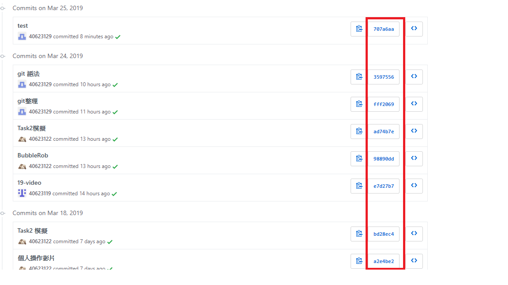

幾乎每一種版本控制系統（Version Control System，以下簡稱 VCS）都支援某種形式的分支（branch）功能， 使用分支意味著你可以從開發主線上分離開來，然後在不影響主線的情況下繼續工作。
有人把 Git 的分支模型視為它的「殺手級功能」， 它有何特別之處呢？新建分支的操作幾乎可以在瞬間完成，並且一般來說切換不同分支也很快； 跟其它的 VCS 不一樣的地方是 Git 鼓勵在工作流程中頻繁地使用分支與合併（merge），即使一天之內進行許多次都沒問題。
git branch :建立一個新的分支這會在目前提交上新建一個指標，它並不會切換到這個分支。
git checkout + 分支名稱:切換到一個已經存在的分支。
*切換分支會修改工作目錄裡的檔案
當你在 Git 中切換分支時，工作目錄內的檔案將會被修改； 如果切換到舊分支，你的工作目錄會回復到看起來就像當初你最後一次在這個分支提交時的樣子。 如果 Git 無法很乾淨地切換過去，它就不會讓你切換過去。
git merge :緊急修正分支進行合併。
git add .
git commit -m "檔案名"
git push
mkdir 名稱 ：創建資料夾
github版本回推
1.git reflog
2.git reset --hard 版本名稱(下圖)

3.git push -f
.